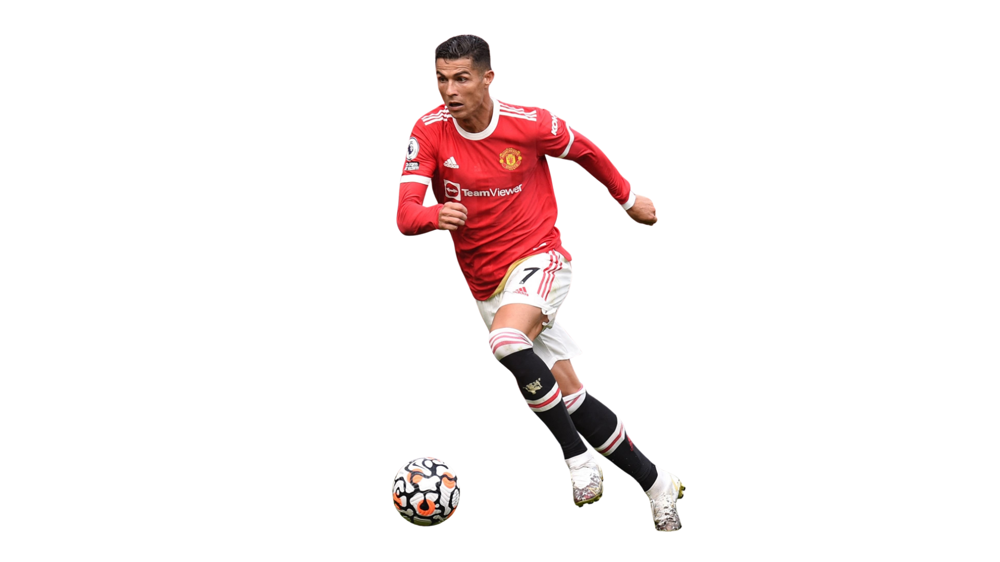

De los jugadores mas determinantes en las ligas mas prestigiosas
El debut como profesional de Cristiano Ronaldo se dio el 14 de agosto de 2002 a la edad de 17 años,
en el partido de Clasificación a la Liga de Campeones de Europa, donde el Sporting de Lisboa enfrentó
al Inter de Milán.
En el inicio de la temporada 2003-2004, Cristiano Ronaldo se incorporó en el Manchester United,
donde lució la camiseta número 7, que temporadas atrás la portaba el inglés David Beckham.
Cristiano Ronaldo disputó por primera vez una final europea el 21 de mayo de 2008, cuando su equipo
el Manchester United jugó la final de la Liga de Campeones ante el Chelsea FC. El partido finalizó 1-1
en el tiempo reglamentario con gol del portugués, por lo que el título se definió desde el punto de penal.
El United se consagró campeón y Cristiano ganó así su primer campeonato europeo.
Tras finalizar la temporada, el jugador logró salir campeón con su equipo de la Premier League
y ganar la Bota de Oro, sumando dos títulos más en su carrera futbolística.
El talentoso jugador portugués siempre manifestó su interés por jugar en un club como el Real Madrid,
por lo que se llegó a un acuerdo entre el Manchester United y el equipo español para su traspaso,
por una cifra que superó los 90 millones de euros. El 6 de julio de 2009, fue presentado en el
estadio Santiago Bernabéu ante más de 90 mil hinchas que coreaban su nombre con la frase
“Sí, sí, sí, Ronaldo ya está aquí”.
El martes 10 de julio de 2018 se hizo oficial su traspaso por 105 millones de euros a la Juventus
de Turín. Fue la transferencia más alta hecha por un jugador mayor de 30 años. El 18 de agosto de 2018,
Cristiano hizo su debut oficial con el equipo ante el Chievo Verona.
El 27 de agosto de 2021 se confirmó su regreso al Manchester United, equipo en el que ya había jugado
hasta 2009. Durante las últimas semanas, el astro había anunciado su intención de dejar la Juventus.
En ese momento se encontraba negociando con el Manchester City, pero finalmente firmó con el United.
